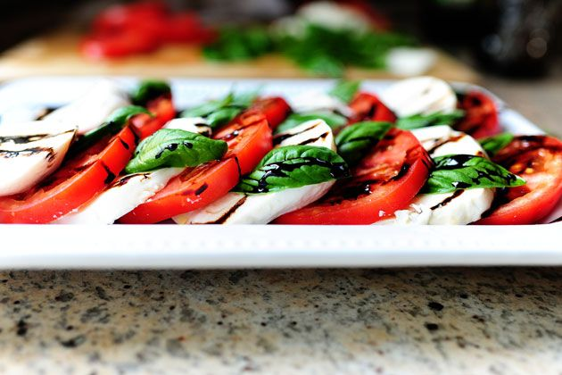

Caprese Salad

Italian Simplicity
Just about my favorite thing on earth. Thick slices of tomato and mozzarella, flavored with fresh basil leaves, olive oil, and a beautiful balsamic reduction. Simple, but oh so impressive.
Ingredients
- Balsamic vinegar
- 3 whole ripe tomatoes, thickly cut
- 12 oz mozzarella cheese, thickly cut
- fresh basil leaves
- Salt and pepper
- Olive oil
Cooking Instructions
- In a small saucepan, bring balsamic vinegar to a boil over medium-low heat. Cook for 10 to 20 minutes, or until balsamic has reduced to a thicker glaze. Remove from heat and transfer to a bowl or cruet. Allow to cool.
- When you're ready to serve, arrange tomato and mozzarella slices on a platter. Arrange basil leaves between the slices. Drizzle olive oil over the top of the salad, getting a little bit on each slice. Do the same with the balsamic reduction, making designs if you want. Store extra balsamic reduction in fridge for a later use.
- End with a sprinkling of kosher salt and black pepper. Serve as a lunch, with crusty bread. Or serve alongside a beef main course for dinner.